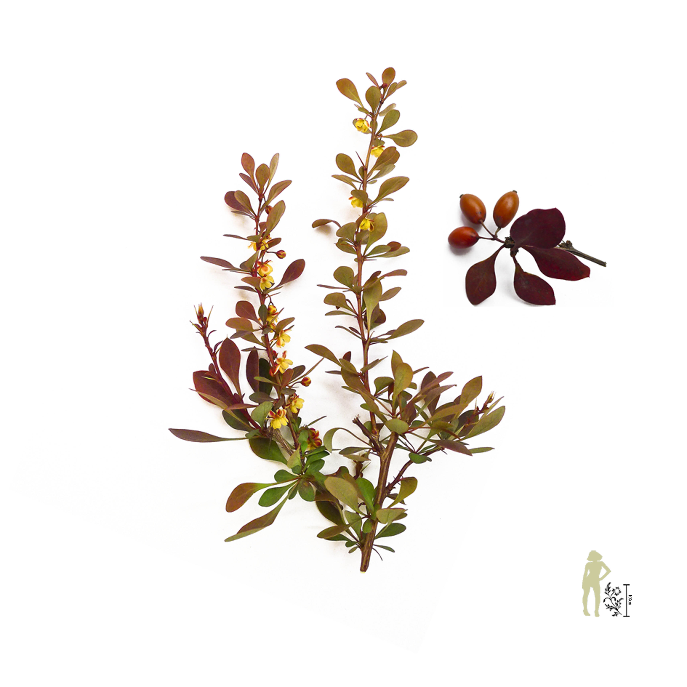
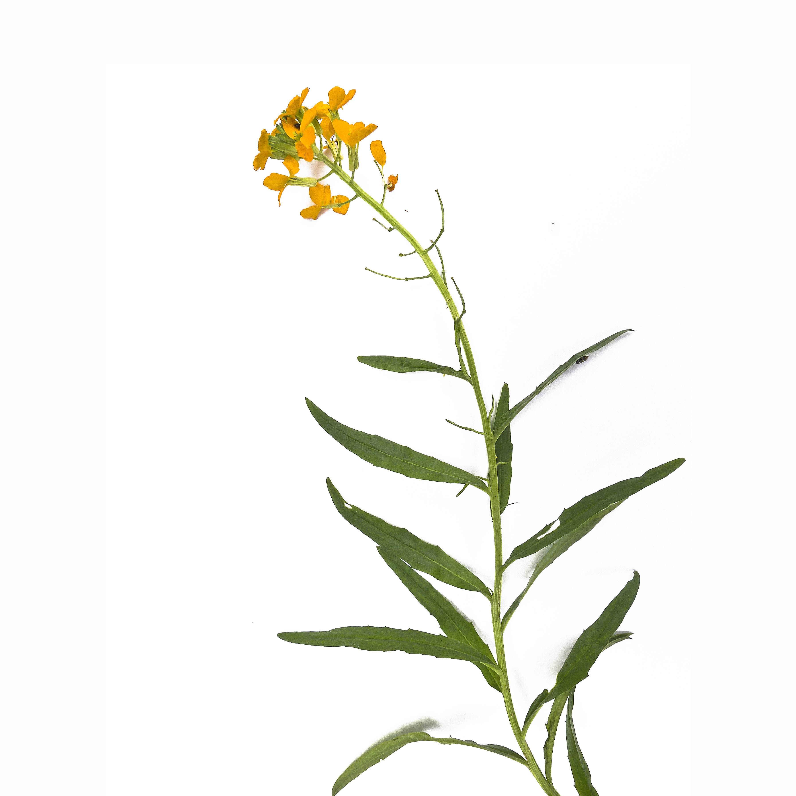
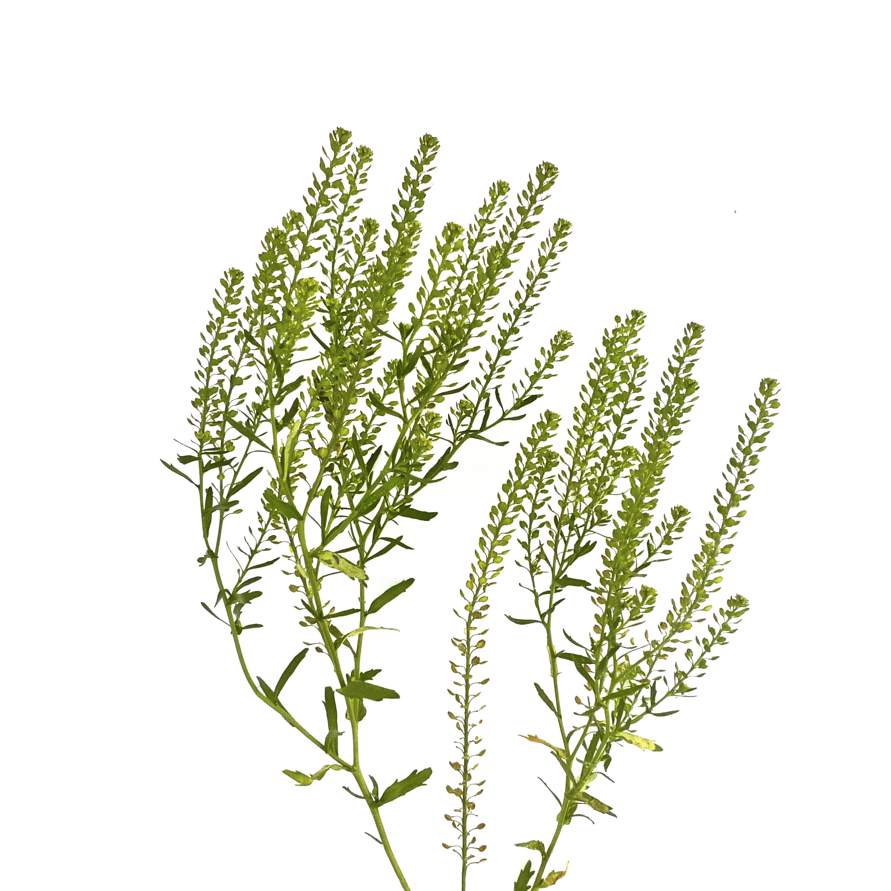

This is a long going family project to establish a field guide of herbs that people usually treated as "weed". Back to the days when people can only treat diseases with herbs, they wouldn't know that there is actual science behind it; yet a great amount of people today, being benefit from modern medicine, deny that there is science behind herbology. Such prejudice that assume all use of herbs are "witchcraft", however, could be a major obsticle in drug development.
The 2015 Nobel Prize laureate Youyou Tu received the prize for her work in extraction and synthesis of Artemisinin, a effective treatment of malaria. Her inspiration was originated from the ancient Chinese treatment of malaria, which the herbal recipe contains Artemisia annua, or sweet wormwood. We believe that there is a great possibility for scientists and pharmacists to discover more of these substances that could be merged effectively into modern treatments; in this case, public awareness was needed for herbology. By establishing this field guide, we hope that we can tell people that even the most seen plants could contain chemicals that could one day, save lives.